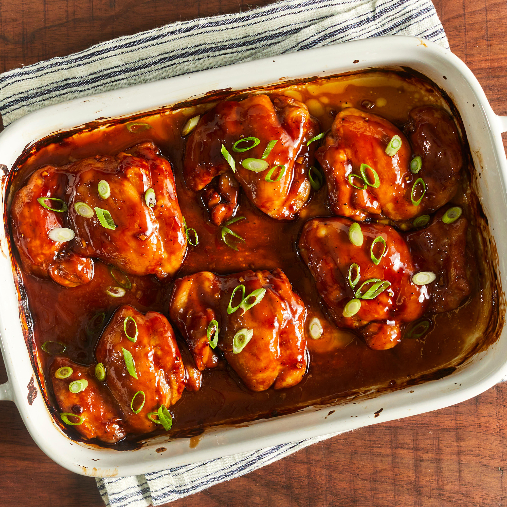

Teriyaki Chicken

What is Chicken Teriyaki?
Teriyaki chicken is simply chicken that is coated in teriyaki sauce.
The dish comes from the Japanese cooking technique called teriyaki, where
meat is grilled or broiled with a soy sauce, mirin, and sugar glaze.
Today, teriyaki chicken refers to any chicken with teriyaki sauce.
Ingredients
- 1/2 cup white sugar
- 1/2 cup soy sauce
- 1/4 cup cider vinegar
- 1 tablespoon corn starch
- 1 tablespoon cold water
- 1 clove garlic, minced
- 1/2 teaspoon ground ginger
- 1/4 teaspoon ground black pepper
- 12 boneless, skinless chicken thighs
Steps
- Preheat the oven to 425 degrees F. Lightly grease a 9x13-inch baking sheet.
- Combine sugar, soy sauce, cider vinegar, cornstarch, cold water, ginger,
and pepper in a small saucepan over low heat. Simmer, stirring frequently,
until sauce thickens and bubbles, 3 to 5 minutes. Remove from heat.
- Place chicken thighs in the prepared baking dish. Brush both sides of each
thigh with the sauce. Reserve any extra sauce for basting.
- Bake in the preheated oven for 30 minutes.
- Flip chicken and brush with sauce. Continue to bake, basting with
remaining sauce every 10 minutes, until no longer pink and juices run
clear, 20 to 30 more minutes.